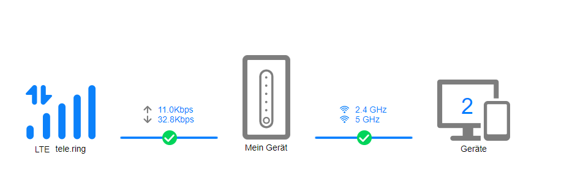
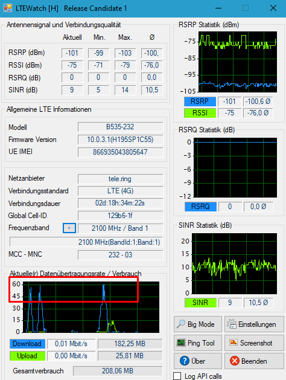

Hallo zusammen!
Ich nutze seit nicht mal einer Woche den Tarif Youth 150 Flex, dass heißt ich sollte 150 MBit/s Download und 50 MBit/s Upload haben.
Jedoch, bei mehreren Speedtests und auch im Alltäglichen Nutzungsverhalten merkt man, dass diese nicht ansatzweise erreicht werden.
Bei den Speedtests kommen höchstens 15 MBit/s Download und merkwürdigerweise 25 MBit/s Upload raus.
Laut der Netzabdeckungskarte sollte LTE Voll unterstützt werden, was der Router auch anzeigt.
Kann mir bitte jemand helfen?
Was ich bereits versucht habe:
Vielen Dank im Vorraus.
Mit freundlichen Grüßen,

Koi
Hallo @Koi ,
Bei einem mobilen Internet dieses dem shared Medium unterliegt kann man keine Geschwindigkeit versprechen. Da es sich wie bereits erwähnt um einem geteilten Medium handelt, ist es sehr stark von der Auslastung und Entfernung der Mobilfunkzelle abhängig. Zudem spielen die Hardware(Router) sowie das Frequenzband dieses bei dir Magenta anbietet, eine große Rolle. Auch dir kann ich einen Zugang über DSL oder wenn verfügbar über Kabel empfehlen, den nur dort gibt es, eine fix vor eingestellte Bandbreite die nur wenig bis überhaupt nicht schwankt.
Wie ich gerade sehr gibt es bei dir kein Carrier Aggregation somit bündelt dein Router keine Frequenzen. Ich nehme mal an du wohnst am Land und wirst über das LTE Band 20 versorgt dieses maximal 75-80 MBit kann und natürlich auch auf weiteren Kunden aufgeteilt wird. Schau auch mal Hier vorbei, vielleicht hilft dir das etwas weiter. Solltest du noch fragen haben sind wir gerne für dich da.
Bearbeitet von Rexalius2000
vor 33 Minuten schrieb Rexalius2000:Hallo @Koi ,
Bei einem mobilen Internet dieses dem shared Medium unterliegt kann man keine Geschwindigkeit versprechen. Da es sich wie bereits erwähnt um einem geteilten Medium handelt, ist es sehr stark von der Auslastung und Entfernung der Mobilfunkzelle abhängig. Zudem spielen die Hardware(Router) sowie das Frequenzband dieses bei dir Magenta anbietet, eine große Rolle. Auch dir kann ich einen Zugang über DSL oder wenn verfügbar über Kabel empfehlen, den nur dort gibt es, eine fix vor eingestellte Bandbreite die nur wenig bis überhaupt nicht schwankt.
Wie ich gerade sehr gibt es bei dir kein Carrier Aggregation somit bündelt dein Router keine Frequenzen. Ich nehme mal an du wohnst am Land und wirst über das LTE Band 20 versorgt dieses maximal 75-80 MBit kann und natürlich auch auf weiteren Kunden aufgeteilt wird. Schau auch mal Hier vorbei, vielleicht hilft dir das etwas weiter. Solltest du noch fragen haben sind wir gerne für dich da.
Hallo
@Rexalius2000
, vielen Dank für die schnelle Antwort!
In der Tat, ich wohne am Land - Aber, wenn deine Theorie mit dem LTE Band 20 stimmt, stellt sich mir die Frage:
Bei der Netzabdeckungs-Karte wir mir angezeigt, dass LTE verfügbar ist. Laut meinen Rechechen sollte doch LTE bis zu Warum wurde mir aber bei der Bestellung in einer Mail ausdrücklich gesagt, dass der Youth 150 Flex an meinem Wohnort verfügbar ist, wenn das LTE Band 20 nur 75-80 MBit schafft?
Zudem habe ich mal testweise einen Download die ganze nacht durchlaufen lassen, bei einer Max. Downloadrate von 5 MBit. Wenn der Hund hier begraben wäre, müsste doch zumindest in den sehr frühen Morgenstunden die Geschwindigkeit höher sein, oder liege ich da komplett falsch?
Die Idee mit DSL wäre schön und gut, leider ist das Kabel bei mir Zuhause von A1 und somit kann ich das nicht nutzen : /
Gibt es eine Möglichkeit zu sehen, welche Sendestationen in meiner Nähe sind?
Um möglicherweise das hin-und-her switchen des Routers ausschließen zu können.
Liebe Grüße,
Koi
vor 8 Minuten schrieb Koi:Gibt es eine Möglichkeit zu sehen, welche Sendestationen in meiner Nähe sind?
Um möglicherweise das hin-und-her switchen des Routers ausschließen zu können.
Gefunden : )
Es sind immer bis zu Werte, leider kann niemand genau sagen wie hoch die Geschwindigkeit ist. Man kann es nur leicht schätzen(siehe Vertrag). Normalerweise sollte wie du sagst außerhalb der Primetime die Performance besser werden. Wenn auf der Netzabdeckungskarte nur LTE angezeigt wird und kein LTE Advanced dann ist nur 1 Frequenzband verfügbar. Meistens ist es dann das Band 20 (Reichweite zwischen 7-10 Kilometer), was zwar eine sehr hohe Abdeckung hat, aber auch meistens ziemlich hoch ausgelastet ist. Es muss nur 1 oder 2 User geben, die in der Mobilfunkzelle, die du verwendest durchgehend streamen oder downloaden und die Geschwindigkeit geht in den Keller. Was du aber versuchen kannst ist das Band 3 mit 1800 MHz über LTE Watch auszuwählen. Dieses hat eine höhere Bandbreite als Band 20. Sollte aber das nicht verfügbar sein, wird die Mobilfunkverbindung getrennt und die Led Leuchtet nur mehr Rot.
Bearbeitet von Rexalius2000Hast du zufällig die Cell-id 19372808,19372821,19372822,19372823 ? Siehe Webinterface deines Routers. Du kannst das Kabel von A1 schon nützen. Magenta würde sich dann dort einmieten.
Bearbeitet von Rexalius2000Danke! Ja wie leider vermutet wirst du von der Station in Sankt Peter am Wimberg versorgt diese nur Band 20 (derzeit) unterstützt. Die Station in Punzig würde Band 3 mit 1800 MHz ausstrahlen laut Abfrage(Ohne Garantie). Check mal deine A1 Leitung wo sich Magenta einmieten könnte. Interessant sind die unteren Werte wo die Versorgung des Wählamts angegeben ist.
Bearbeitet von Rexalius2000Hoffentlich kannst du etwas damit anfangen - ich leider nicht.
Zusätzlich habe ich noch mal im Router Web-Interface nachgesehen, alles außer tele.ring LTE ist verboten. Heißt das, ich kann mich nicht bei A1 einmieten?
Danke! Du hast fast dieselbe Performance wie ich über die VDSL2 Leitung. Würde dir aufgrund der Abfrage Internet Fix 20 (Internet 20 + Digital Telefon) um € 23,00 monatlich empfehlen. Maximale Bandbreite Down-/Upload in kBit/s 20.480/ 5.120-Datenvolumen unlimitiert inkl. Router und kostenloser Herstellung durch einen A1 Techniker. Bestellung über die Magenta Serviceline 0800 676 300 Montag bis Sonntag 08:00 - 22:00 Uhr oder im nächsten Magenta Shop.
Das einmieten betrifft nur das Festnetz also die DSL Leitung. https://community.magenta.at/blogs/entry/174-dslinternet-fix-–-von-der-bestellung-bis-zur-aktiven-internetverbindung/
Bearbeitet von Rexalius2000
Hallo nochmal.
Habe micht etwas durch LTEWatch geklickt:
Bei 1800MHz ist die Geschwindigkeit noch schlechter, mit max. 5 MBit/s Download.
Zum Testen habe ich danach das 2100MHz Band ausgewählt, und erreiche nun zwischen 35 und 50 MBit/s.

Gibt es die Möglichkeit, vom Youth Flex 150 z.B. auf den Internet Flex 40 zu wechseln?
Mit freundlichen Grüßen,
Koi
Interessant das bei dir Band1 verfügbar ist, diese Frequenz habe ich auf der Karte leider nicht gefunden, aber Super das du jetzt eine bessere Geschwindigkeit hast! Zum Tarifwechsel frag am besten bei Magenta an, ob das noch möglich ist da wir hier deinen Vertrag nicht sehen. Bitte beachte aber die Verwendungsklassen. Dein Tarif befindet sich in der Klasse D und Magenta Flex 40 in der Klasse G. https://www.magenta.at/bandbreitenoptimierung
Bearbeitet von Rexalius2000{kind=link}
{kind=link}
{kind=link}
{kind=link}
{kind=link}